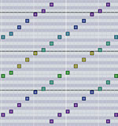
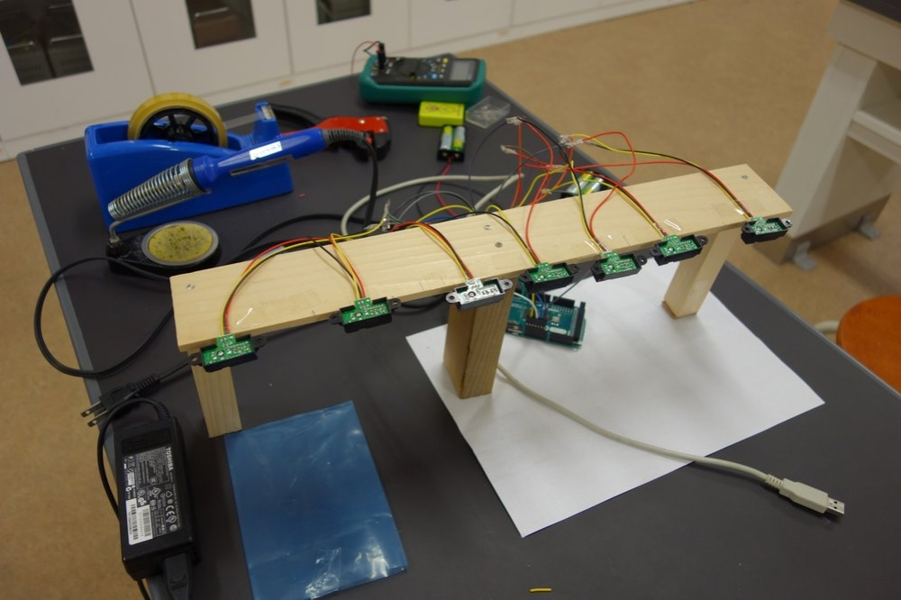
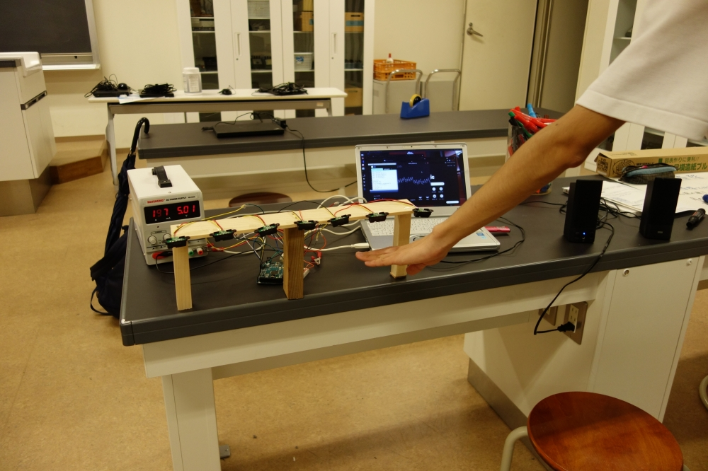

名前の通り、永遠に高くなっていく（ように聞こえる）音のことである。目の錯覚を利用した絵などはよく見るが、これは耳の錯覚を利用した現象だ。この錯聴は、「無限音階」又は、発見した認知科学者のロジャー・シェパードに因み「シェパード・トーン」と呼ばれる。
普通の音階では1オクターブ上がると周波数は倍になり、そのまま上げていくと可聴域（20～20,000Hz程度）を超え人間の耳には聞こえなくなる。
では、無限音階はなぜ永遠に周波数が上昇するように聞こえるのか？ それは、1オクターブ差のある複数の周波数の音を同時に出しているからである。
以下の図がわかりやすい。（横軸：時間、縦軸：周波数）

ある周波数の音が上昇し続け人間の可聴域を超えても、周波数の低い音が追加されていく。 このことによって、実際は重ね合わされた同じ音が繰り返されるだけだが、人間には音階が上昇し続けているように聞こえる。
無限音階を利用したピアノ（ソフト）があったら面白いのではないだろうかと思い、作ってみることにした。
音の合成・出力はProcessingのライブラリMinimに任せた。 Processingは、Javaを簡略化しグラフィカルな画面を作ることに特化したプログラミング言語である。
簡単なピアノのようなものを作り文化祭用に展示したいと考えていたが、 コロナウイルス感染拡大防止のために来場者が展示物に触れるような発表方式は禁止となった。 そこで、赤外線センサを利用した非接触ピアノ（もどき）を作ることに決めた。
Arduinoを使用すると、とても簡単に製作できた。赤外線センサの出力値が一定値を上回ったとき信号がオンになるというプログラムをArduinoに書き込み、センサの配線をした。 Processingとの連携はシリアル通信で行った。 これも、ProcessingのSerialライブラリを使用すると楽に作ることができた。
無限音階という現象を楽しむことが、本工作の目的であるのでプログラムの説明は割愛する。
センサを取り付ける台や配線は84期の後輩達に作るのを手伝ってもらった。
 
自分が感じた無限音階の面白さを共有したいと思いこの無限音階ピアノを作った。主に六甲学院への入学を検討している小学生に楽しんでもらいたいと思っていた。しかし、現在の社会の状況でそれが不可能となってしまったのが少し残念だ。 もし万が一、この記事を読んで面白いと思ってくれた中学受験生がいたら嬉しく思う。
ハードウェアの製作に協力してくれた、84期のH君とO君に感謝します。
Tweet #六甲学院物理部2021